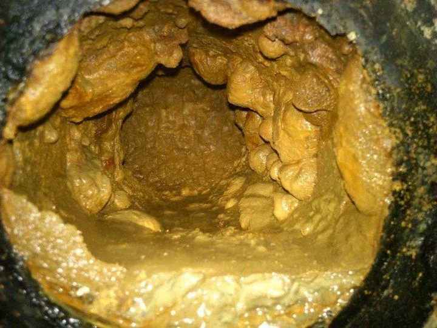

Доставка питної води в Києві та Київській області
Чиста вода — це базова умова для здоров'я кожної людини. В умовах сучасного міста, де якість водопровідної води часто залишає бажати кращого, надійний сервіс доставки очищеної води стає необхідністю. Crystal Water забезпечує мешканців Києва та Київської області водою еталонної чистоти.
Чому обирають доставку Crystal Water?
Ми не просто перевозимо бутлі, ми гарантуємо якість продукту на кожному етапі:
- Професійне очищення. На відміну від багатьох локальних постачальників, ми використовуємо повноцінну систему зворотного осмосу та озонування. Це гарантує відсутність бактерій, вірусів і важких металів.
- Безпечна тара. Ми використовуємо лише якісний харчовий полікарбонат, який не виділяє шкідливих речовин навіть за тривалого зберігання.
- Пунктуальність і сервіс. Ми розуміємо, що вода потрібна завжди. Наша логістична мережа налаштована так, щоб доставка була швидкою та зручною для вас.
Рішення для різних клієнтів
Для приватних осіб і родин
Забезпечте своїх рідних чистою водою. Ми пропонуємо зручні тарифи на доставку бутильованої води додому, щоб ви могли забути про фільтри та постійний контроль якості.
Для офісів і бізнесу
Чиста вода в офісі — це запорука продуктивності співробітників. Ми пропонуємо оптові ціни, регулярний графік поставок і допомогу в обслуговуванні кулерів.
Замовте чисту воду просто зараз
Не чекайте, доки закінчиться запас. Забезпечте себе та свою родину водою, якій можна довіряти. Доставка в Києві та Київській області від Crystal Water.
Оформити замовлення на доставку